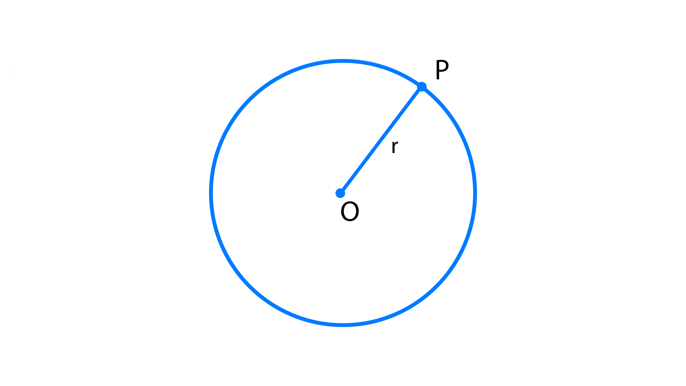
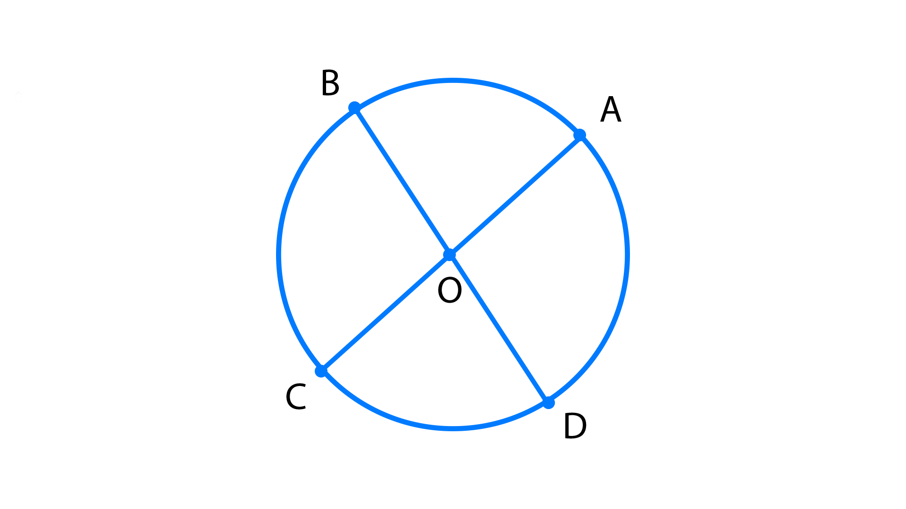
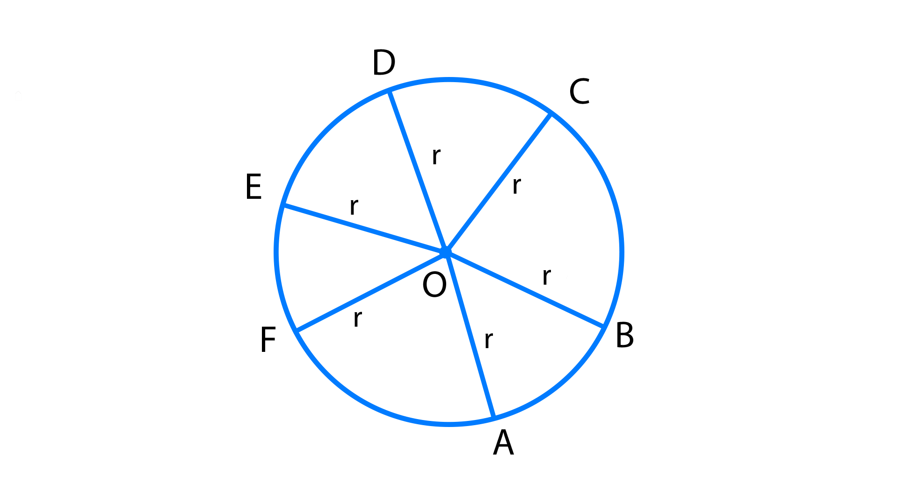
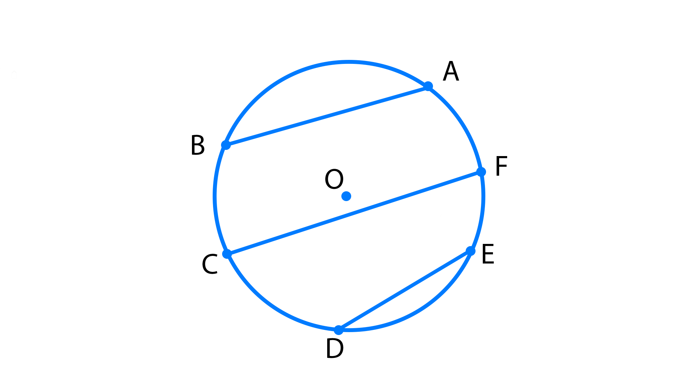
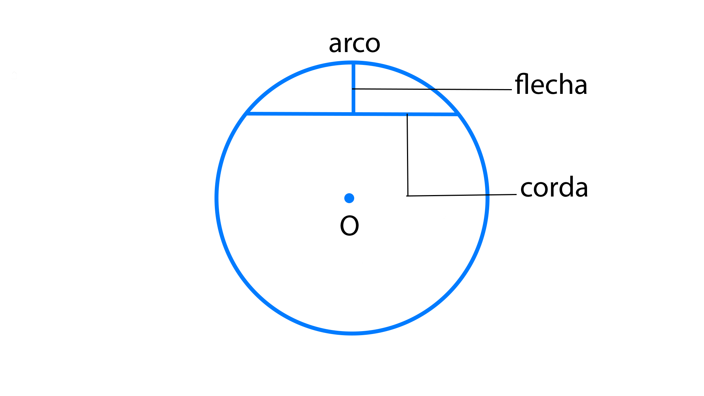

Circunferência é o conjunto de todos os pontos de um plano que estão a uma distância fixa de um ponto fixo chamado de centro.

O - Centro da circunferência (ponto fixo)
P - Um dos pontos que estão a uma distância fixa do centro da circunferência
OP - Raio(de medida r) da circunferência(de distância fixa).
Diâmetro é o segmento com extremidades em dois pontos de uma circunferência, passando sempre pelo centro.

AC e BD são diâmetros.
Raio é o segmento que une o centro a qualquer ponto da circunferência.

Em uma circunferência, podemos traçar infinitos raios. Todos serão congruentes
OA = OB = OC = OD = OE = OF = ... = r
Corda é o segmento com extremidades em dois pontos da circunferência.

AB , CF e DE são cordas.
Flecha é o segmento de reta com extremidades no ponto médio de uma corda e no ponto médio do arco determinado pela corda.
